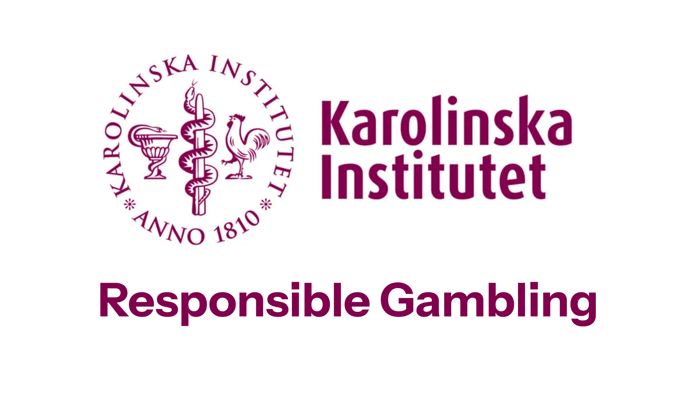
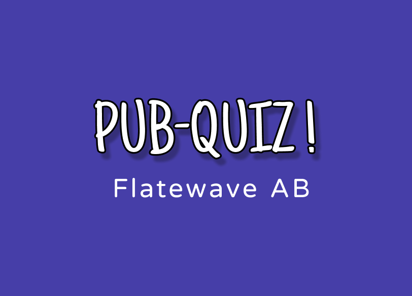
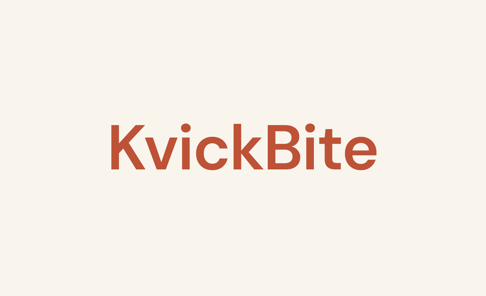
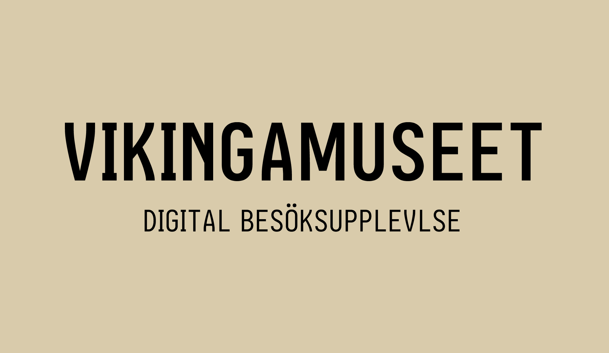

Hej! Jag heter Siramol
Jag gillar att förstå hela kedjan, från användarintervjuer och behovsanalys till wireframes, prototyper i Figma och färdig kod. Eftersom jag själv kodar i HTML, CSS, JavaScript och Tailwind designar jag lösningar som går att bygga, med tillgänglighet och en smidig överlämning till utvecklare i fokus.
studerar UX-design på Nackademin
Behovsanalys och intressentkarta kring spelansvar. Jag kartlade spelares behov längs hela spelresan och hittade de ögonblick där rätt insikt minskar risken mest.

Strategisk research för en startup. Jag rangordnade användarnas behov för att kunna fatta ett evidensbaserat beslut om vad bolaget skulle satsa på.

High-fidelity-design från wireframes till MVP-redo mockups. Fem vyer för mobil och tablet, plus ett mini-designsystem för smidig överlämning till utvecklare.

En gamifierad besöksapp där man skannar QR-koder vid varje monter, bygger sin egen vikingavatar och svarar på quizfrågor om vikingatiden. Rätt svar ger poäng som kan lösas in mot belöningar, som rabatt i museishopen eller gratis fika.
UX-designer under utbildning som tycker om att förstå hela pipelinen, inte bara min egen del av den. Jag kombinerar användarresearch och interaktionsdesign med kodkunskaper och en bakgrund inom arkitektur.